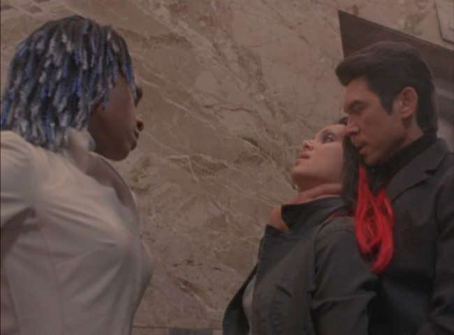

Movie review by : SFAM
Year : 2003
Directed by : David Barto
Written by : Brad Mirman
Degree of Cyberpunk visuals : Low
Correlation to Cyberpunk themes : Low
Rating : 4/10
Key cast members :
Overview: You know things aren't going to be great when a movie copies Highlander 2 for its larger plot points. Absolon never had delusions of being good. It's derivative from the get go. That said, while the plot, story and dialogue suck, at least Absolon has Christopher Lambert, Ron Perlman, Kelly Brook, and Lou Diamond Philips, who gives an especially good performance.
The Story: In a near-future dystopia, a virus has infected everyone on the planet, and has killed off millions. In saving mankind, a drug named Absolon has been developed which combats the virus. Unfortunately, it must be taken every day. One corporation, headed by Ron Perlman, owns Absolon and now controls the fate of mankind. Everyone must line up daily at distribution centers to receive their "fix", otherwise they run the risk of developing to phase II of the disease, and are then incurable.
Finally, a "real" cure for the virus has been developed, but for obvious reasons, the stereotypical evil corporation who owns Absolon doesn't want their market share challenged, so the inventor is murdered and they attempt to bury the cure. Lou Diamond Phillips, who turns in by FAR the best performance here, is Perlman's "tough guy" responsible for "taking care" of the problem. Lambert plays a grizzled cop who inadvertently stumbles on the cover-up, and subsequently becomes emeshed in the "resistence". Along with Kelly Brook, who worked on the cure, Lambert tries to rescue the cure so that humanity can escape the inhumanity that Absolon engenders.

The Bottom Line: Other than Lou Diamond Phillips' performance, there's nothing quality about Absolon. The story, the cheapy matrix FX, the set pieces, the dialogue and the pacing all pretty much suck. I must say though, I'm a real sucker for Christopher Lambert, and it's been a while since I've seen Phillips put in a decent performance. For this reason, I'll raise Absolon from 3 stars (where it probably belongs) to a 4 star review.